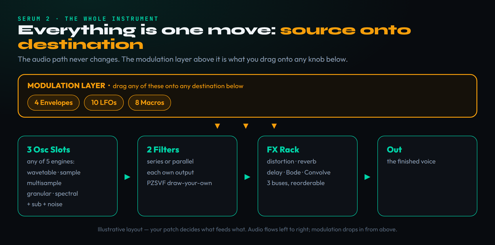
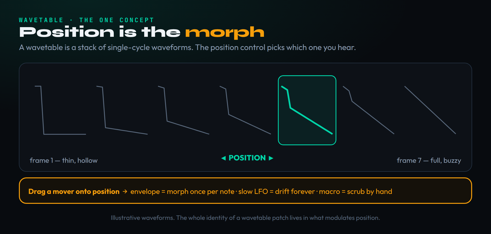
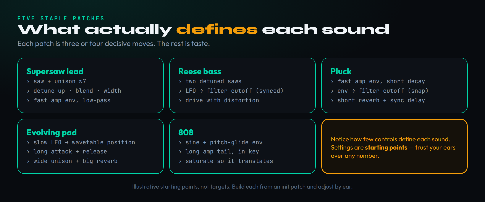

Serum 2 looks like a wall of knobs, but it runs on one idea: you drag a source onto a destination. An oscillator makes a tone, two filters shape it, the FX rack finishes it, and everything in between moves because you dragged an envelope, an LFO, or a macro onto it. Learn that flow once and the interface stops being intimidating. This guide teaches the model, then walks you through building five sounds every producer needs — a supersaw lead, a reese bass, a pluck, an evolving pad, and an 808 — so you finish having actually made patches, not just read about knobs.
Serum has been the default wavetable synth for the better part of a decade, and in March 2025 Xfer Records shipped Serum 2 — a ground-up rebuild that adds four new oscillator engines, a redesigned effects rack, an arpeggiator and clip sequencer, and a modulation system roughly twice the size of the original’s. It is a free upgrade for anyone who owned the first version, which means a huge number of producers now have a far deeper instrument open in their session and no idea where the new depth lives. That is the gap this page fills. We already cover whether Serum 2 is worth buying, how it stacks up against Vital, and where it lands among the best synth plugins. The review tells you whether to buy it; this teaches you to drive it.
If you have never opened a soft synth before, do not start by clicking every control to see what it does. That is the fastest route to feeling lost, because Serum 2 has hundreds of controls and most of them only make sense once you understand the path a sound takes through the instrument. We are going to build that mental map first, in plain language, and only then start making noise. If the words oscillator and filter are brand new, our what is a synthesizer primer covers the absolute basics in a few minutes and this guide will make far more sense afterward. By the time you reach the first patch you will know exactly which section you are touching and why. The new v2 engines — granular, spectral, multisample — are genuinely powerful, but they are the deep end of the pool, and we treat them as a place to go after you can swim, not the spot to jump in.
The one idea that unlocks the whole synth
Every sound in Serum 2 travels the same path: one or more oscillators generate raw tone, that tone passes through up to two filters that carve and color it, the signal then runs through an effects rack, and finally it leaves through the output. Generate, shape, finish, out. That left-to-right flow is the spine of the instrument, and it never changes no matter how complicated the patch becomes. When a Serum patch sounds wrong, the fix is almost always at one specific station on that path, and knowing the path tells you where to look.
On top of that fixed audio path sits the thing that makes a synth feel alive: modulation. A static tone — one steady oscillator into an open filter — is dull. Real patches breathe because something is moving: the filter opens as you hold a note, the pitch glides down at the start, the level swells in and fades out. In Serum 2 you create that movement by dragging a source onto a destination. The sources are your envelopes, your LFOs, and your macros; the destinations are nearly every knob on the panel. Drag an envelope onto the filter cutoff and now the filter moves every time you play a note. That is the entire modulation concept, and once it clicks, the synth opens up.
This is why Serum became the teaching standard in the first place: the panel shows you what is happening. Turn a knob and the value moves. Assign a modulator and a colored ring appears around the destination showing how far and how fast it travels. Play a note and the wavetable display animates, the filter graph bends, the LFO scrubs across its shape in real time. You are not flying blind and reading a manual — you watch the sound change while you hear it change, and that tight loop between eye and ear is the best sound-design teacher there is. If a concept here feels abstract, open the synth, make the move, and watch. Reading about a filter sweep is nothing next to seeing the graph bend while you hear the tone hollow out.
So the plan is simple. We tour the parts that matter in the order the signal hits them, we cover the single most important wavetable concept, and then we build — five staple patches, each one a small lesson in a different corner of the instrument. Keep the model in your head the whole way: source onto destination, generate then shape then finish. If you ever feel lost in a patch, ask which station you are standing at and what is moving. The answer is always in that one sentence.
Signal flow: oscillators, two filters, FX, out

Start at the left. Serum 2 gives you three oscillator slots, and this is the headline change from the original: where Serum 1 had two wavetable oscillators plus a sub and a noise source, each of the three slots in v2 can hold any of five engine types. You can run a classic wavetable in one slot, a granular texture in another, and a sampled instrument in the third, all stacked into the same voice. There is still a dedicated sub oscillator for clean low end and a noise source for adding grit, breath, or attack transients. For your first patches you will mostly use a single wavetable oscillator, because that is where the synth’s identity lives and where the clearest lessons are.
The oscillators feed the two filters. Two is a meaningful number: you can run them in series, where the signal passes through the first and then the second, stacking their effect; or in parallel, where the signal splits and each filter processes its own copy with its own output. Series is for sculpting one sound more aggressively — a low-pass into a band-pass, say. Parallel is for blending two filtered versions of the same tone, which is how a lot of wide, complex basses get their character. Each filter offers a deep menu of types, from clean analog-modeled low-pass and high-pass shapes to comb and formant filters, and Serum 2 adds a draw-your-own filter mode called PZSVF where you sketch the response curve by hand. You do not need that on day one. You need to know that the filter is where most of a patch’s expressive movement happens, because the filter is the destination you will modulate most.
After the filters comes the FX rack, and this is one of the most expanded areas in v2. You get the familiar distortion, chorus, flanger, phaser, EQ, compressor, delay, and reverb, but now you can duplicate modules, stack two of the same effect, and route them across multiple buses — a main path plus two additional FX buses — so you can send one oscillator through one chain and another oscillator through a completely different one. New modules include a Bode-style frequency shifter for metallic and clangorous tones, a convolution reverb that loads impulse responses of real spaces (or any audio you feed it), and three additional algorithmic reverbs alongside the classic hall and plate. The order of effects matters; drag them to reorder. For now, treat the rack as the finishing station — reverb and delay for space, distortion for grit, EQ to fix balance — applied after the tone is already shaped.
Above this whole path sits the modulation layer, and Serum 2 roughly doubled it: you now have up to ten LFOs, four envelopes that can sync to your project tempo, and eight macros, all assigned by dragging. The first envelope is hardwired to amplitude, which is why every patch makes sound the moment you play it — that envelope is controlling volume over the life of the note. Everything else is yours to route. If you understand only this diagram, you understand Serum 2: a fixed road from oscillator to output, and a layer of movers you drag onto any point of that road. Learn more about how filters and resonance behave in our sound design basics primer if the filter language here is new.
A tour of the parts you’ll actually touch
Open Serum 2 and the panel divides into clear zones. Top left is the oscillator area, where you load a wavetable, set its position, choose a warp mode, and dial unison and detune. Below and to the right are the two filters. The lower strip holds the modulation sources — the envelopes and LFOs — with the matrix and macros nearby. The FX rack lives on its own tab, as does the new Mixer page, which finally gives you a single screen to balance the oscillators, filters, and FX buses against each other and see the signal flow at a glance. Spend thirty seconds locating these zones before you make a sound; orientation is half the battle.
The oscillator is the part you will live in. For a wavetable oscillator the key controls are the wavetable selector (which table of waveforms is loaded), the position knob (where in that table you are reading from), the warp controls (how the waveform is bent or processed), and the unison and detune settings (how many stacked voices and how far apart they are tuned). Serum 2 adds dual warp slots, true frequency modulation alongside the old phase-distortion FM, and a smooth-interpolation mode that lets the position glide continuously through the table instead of stepping between frames. That last one matters more than it sounds: it makes wavetable sweeps liquid rather than gritty.
The modulation sources are where movement comes from. An envelope describes a one-shot shape across the life of a note — the classic attack, decay, sustain, release contour. Attack is how long the value takes to rise when you press a key; decay is the fall to the sustain level; sustain is the held level while the key is down; release is the fade after you let go. An LFO is a low-frequency oscillator: a repeating shape — a sine wave, a ramp, a custom drawn curve — that cycles continuously, either free-running or synced to your tempo so it locks to the grid. Envelopes are for shapes that happen once per note; LFOs are for movement that repeats. If envelopes and LFOs are new to you, our sound design basics guide and the free ADSR visualizer tool make the four envelope stages click quickly.
The matrix is the ledger of every modulation routing in the patch. Each time you drag a source onto a destination, a row appears here showing the source, the destination, and the depth — how strongly it acts — which you can fine-tune, invert, or curve. You rarely need to open the matrix to create a routing, because dragging does that, but it is invaluable for seeing and editing what you have built once a patch gets busy. The macros are eight assignable knobs that can each control many destinations at once, which is how you build a single “brightness” or “movement” control that performs the patch live or maps to a hardware knob. Keep the synthesis parameter reference open in another tab while you learn the names; it demystifies the jargon fast.
Wavetables: position is the magic

Here is the idea that makes wavetable synthesis what it is, and the one concept worth slowing down for. A normal oscillator plays a single fixed waveform — a sine, a saw, a square — and that is the tone, start to finish. A wavetable is different: it is a stack of many single-cycle waveforms lined up in a row, like frames on a strip of film. At one end of the stack you might have a thin, hollow waveform; at the other, a rich, buzzy one; and dozens of gradual steps in between. The position control chooses which frame in that stack you are currently hearing. Park it at one end and you get the hollow tone; park it at the other and you get the buzzy one; move it across and the timbre morphs continuously from one to the other.
That single control — position — is the heart of the instrument, because the moment you let something move it, you get evolving, animated timbres that a fixed oscillator simply cannot make. Drag an envelope onto position and the tone morphs across the table once per note: bright on the attack, settling somewhere darker as the note sustains. Drag a slow LFO onto position and the tone drifts back and forth forever, the engine of every lush, shifting pad. Drag a macro onto position and you have a performance knob that scrubs through the table by hand. Same control, three completely different musical results, depending on what you assign to drive it. When you hear a Serum patch that seems to be alive and changing under your fingers, position modulation is usually what you are hearing.
Two more pieces complete the picture. The warp modes reshape each waveform as it plays — bending it with frequency modulation, phase distortion, hard sync, or various distortions — so you can take a plain table and make it scream or growl without changing the table itself. Serum 2 gives you two warp slots per oscillator now, which stacks two reshaping processes for far more extreme results than the original allowed. And smooth interpolation, mentioned earlier, removes the stepping you used to hear when sweeping position quickly, so fast morphs stay glassy. You do not need to master warp on your first day, but you should know it exists, because when a patch needs more aggression than the raw table provides, warp is where you reach.
Build #1: the supersaw lead
Time to make a sound. The supersaw — that wide, thick, detuned lead that powers most of trance, big-room, and a lot of modern pop — is the perfect first patch because it teaches unison, the single most satisfying control in the synth. Start from an initialized patch (the menu has an “init” preset) so you are building from a clean single saw, not someone else’s sound. Load a basic analog saw wavetable into oscillator one and play a note: a single, thin saw. Everything from here is about thickening it.
The magic control is unison. Unison stacks multiple copies of the oscillator into one voice, and detune spreads them slightly apart in pitch. Push unison up to around seven voices and turn detune up: suddenly the thin saw becomes a huge, shimmering wall, because those slightly-out-of-tune copies beat against each other and create constant movement. That beating is the supersaw. Add a blend control to set how loud the detuned copies are relative to the center voice — higher blend, more chorused width — and a width control to spread the stacked voices across the stereo field so the sound opens up wide. Already, with nothing but unison, detune, blend, and width, you have the core of a supersaw.
Now shape it so it plays like a lead rather than a drone. The amplitude envelope wants a fast attack so notes speak instantly, a moderate sustain, and a short release so notes do not smear into each other. Bring in the filter: set a low-pass and pull the cutoff down until the top is slightly tamed, then add a touch of resonance for a little edge at the cutoff point. For polish, a small amount of reverb in the FX rack to set it back, and a short delay synced to the tempo to add rhythmic width. If the lead feels too clean, a hair of distortion or saturation thickens it — the same principle we cover in how to use saturation. This patch is the backbone of a huge amount of EDM, and you just built it from a single saw.
The lesson to carry forward: width and thickness in a synth almost always come from many slightly-different copies of the same thing, not from one bigger oscillator. Unison is how Serum stacks those copies. Detune is how far apart it spreads them. Once you internalize that, layering synths makes intuitive sense too — which is its own skill we cover in how to layer synths.
Build #2: the reese bass
The reese — the snarling, modulating bass at the heart of drum and bass, dubstep, and neuro — is built on the exact same idea as the supersaw, just aimed downward and made to move. It teaches you how detuned oscillators plus filter motion plus distortion combine into one of the most useful low-end sounds in electronic music. Init the patch again and load a saw wavetable, but this time you are working in the bass register, so play down low.
Start with two detuned saw layers. You can use unison on a single oscillator with heavy detune, or set up two oscillators a few cents apart — either way the goal is that same beating interference, but slower and grittier than the supersaw because we are down low. Set the detune so the two layers grind against each other into a slow, throbbing churn. That churn is the reese’s signature; if it sounds static, push the detune until you hear the movement, then back off to taste. Keep the sub clean: route a dedicated sub oscillator or a sine layer an octave down for the actual low end, because the detuned saws are about character, not fundamental weight.
Now make it move, because a reese is defined by motion. Drag an LFO onto the filter cutoff and sync it to the tempo so the filter sweeps rhythmically — that wah-like motion is most of the sound’s appeal. Try a low-pass that opens and closes over a bar, or a band-pass that scans the midrange. The two filters earn their keep here: run them in parallel for a hollow, phasey character, or in series for a more focused sweep. Finally, drive it with distortion in the FX rack. A reese without distortion is thin; distortion adds the harmonics that let it cut through a dense mix and gives it that aggressive, snarling edge. Mind your gain staging as you add drive, and use the Mixer page to keep the sub from disappearing under the distorted mids.
The takeaway: filter modulation is what turns a static tone into a performance. The LFO-on-cutoff move you just made is one of the most reusable techniques in the whole instrument, and you will reach for it constantly — in basses, in pads, in plucks, in risers. Whenever a patch feels frozen, ask what could move the filter.
Build #3: the pluck
A pluck is short, percussive, and pitched — the bright, bouncy stab that drives house, future bass, and countless pop toplines. It is the patch that teaches envelopes properly, because a pluck is almost entirely an envelope trick. Init the patch and load any reasonably bright wavetable; a saw or a wavetable with some upper harmonics works well, because we want brightness to pluck out of.
The whole sound lives in two envelopes. First, the amplitude envelope: set a near-instant attack, a short decay, little or no sustain, and a short release. That shape — fast in, fast out — is what makes a note feel plucked rather than held. Play it now and you already have the rhythmic bounce. Second, and this is the move that makes a pluck sparkle, drag a second envelope onto the filter cutoff. Give that envelope a fast attack and a short decay just like the amp envelope, then set the modulation depth so the filter snaps open on the attack and closes again immediately. The result is a bright spit of harmonics at the very start of each note that fades to a darker body — the classic pluck “ping.” The faster the filter envelope’s decay, the snappier and more percussive the pluck.
Finish it with space, because plucks live or die on their tail. A short, bright reverb places the pluck in a room without washing it out, and a tempo-synced delay — a dotted eighth is the genre cliché for a reason — turns a single note into a rhythmic pattern that fills the arrangement. Keep the reverb and delay modest; a pluck should stay tight and defined, not smear. If you want it wider, a touch of unison and stereo width opens it up the same way it did the supersaw, just gentler.
The lesson: two envelopes, two destinations. One shapes the volume, one shapes the filter, and the interaction between them is what gives a sound its character over the life of the note. This amp-plus-filter-envelope pairing is the foundation under an enormous range of patches, and once you can hear what each envelope contributes, you can dissect almost any plucked or percussive synth sound by ear.
Build #4: the evolving pad
A pad is the opposite of a pluck in every way — slow, sustained, wide, and constantly shifting — and it teaches you the single most beautiful thing wavetables do: modulating position over time. Init the patch, load a wavetable with a lot of variation across its frames (a complex or vocal-ish table is ideal, because you want the position sweep to travel through genuinely different timbres), and play and hold a low chord.
First, shape it for length. The amplitude envelope wants a slow attack so the pad swells in rather than starting abruptly, a full sustain so it holds, and a long release so chords overlap and bloom into each other. That alone turns the oscillator into something pad-like. Now make it evolve: drag a slow, tempo-synced LFO onto the wavetable position, set to a gentle shape like a triangle and a long cycle — several bars per sweep. The position now drifts continuously through the table, so the timbre is never quite the same from one moment to the next. This is the move that separates a living pad from a static chord, and it is exactly the position modulation we built up to in the wavetable section, now put to work.
Layer width and depth on top. Add modest unison and detune for stereo spread, the same thickening trick from the supersaw but gentler. Bring in both filters — a low-pass to keep the top from getting harsh, perhaps a second filter in parallel for a hollow, breathy color — and consider a second, slower LFO on one filter’s cutoff so the brightness also drifts. Finish with generous reverb in the FX rack; pads are one of the few patches where a large, lush reverb is the whole point, and Serum 2’s new convolution and algorithmic reverbs give you real spaces to place the sound in. The more independent slow movements you stack — position, cutoff, a touch of pitch drift — the more the pad feels like a weather system rather than a sound.
The takeaway: slowness plus continuous modulation equals evolution. A pad is not a special kind of oscillator; it is ordinary oscillators shaped by slow envelopes and driven by slow modulators. Master the slow end of the modulation range and lush, cinematic textures stop being mysterious.
Build #5: the 808
The 808 — the deep, booming, pitched kick-bass that anchors trap, hip-hop, and modern pop — is the patch that ties pitch modulation and saturation together, and it proves that even the most fundamental low-end sound is just a sine wave shaped intelligently. Init the patch and, instead of a complex wavetable, load a simple sine wave or a wavetable parked on a near-sine frame. Play a low note: a clean, deep tone. That is the seed of every 808.
Two moves turn that sine into an 808. First, the pitch glide: drag an envelope onto the oscillator’s pitch, give it a fast decay and a meaningful depth, and tune it so the note starts a little higher and drops quickly to its target pitch. That fast downward pitch sweep at the very start is what gives an 808 its punch and its kick-like attack — it is the difference between a flat bass note and a sound that hits. Keep the pitch envelope’s decay short; the glide should be over in a fraction of a second. Second, shape the amplitude envelope for a long, sustaining tail so the 808 rings out under the beat, with a release that lets it decay naturally rather than cutting off hard.
Now make it audible on real speakers, because a pure sine 808 vanishes on phones and laptops. Add distortion or saturation in the FX rack: drive generates harmonics above the fundamental, and those harmonics are what let a small speaker imply the deep bass it cannot physically reproduce. This is the single most important step for an 808 that translates — the same harmonic-generation principle we cover in depth in how to use saturation. Tune the 808 to the key of your track so it functions as a bassline, not just a thud; an out-of-tune 808 fights the harmony. If you want to go deeper on the genre-specific moves — pitch patterns, gliding between notes, layering a click for attack — our guide to making trap 808s from scratch picks up exactly here, and the 808 sub-bass tuner helps you lock the pitch to your key.
The lesson: pitch is a modulation destination like any other, and saturation is not just for grit — it is how low end survives small speakers. Drag an envelope onto pitch and you can make kicks, toms, zaps, and 808s; drive the result and you make it translate. Two simple ideas, enormous range.
Going deeper: modulation depth and the v2 engines

Look back at the five patches and a pattern emerges: every one of them came down to a handful of modulation routings. Unison and detune for width. An envelope on amplitude for shape. An envelope or LFO on the filter for movement. An envelope on pitch for punch. An LFO on wavetable position for evolution. That is essentially the whole game. Sound design is not about knowing every control; it is about knowing which few destinations matter for the sound you want and what kind of mover — fast envelope, slow LFO, performance macro — belongs on each. Serum 2 simply gives you more and better movers: ten LFOs with drawable shapes, four tempo-syncable envelopes, plus Chaos and 2D LFO modes for genuinely complex, semi-random motion that older synths could not produce.
The macros deserve a special mention because they turn a static patch into a playable instrument. Assign a macro to several destinations at once — say, filter cutoff, reverb amount, and unison detune — and a single knob now performs a sweeping, opening, widening gesture across the whole patch. Map that macro to a knob on your MIDI controller and you can perform the build-ups and drops live, or automate the macro in your DAW for an evolving arrangement. Macros are also how the best preset designers build the “one knob that does everything” controls you see in commercial soundbanks. If you want to understand how those presets work, open one and read the matrix to see what each macro touches — reverse-engineering presets is one of the fastest ways to learn.
Only now, with the fundamentals solid, are the new v2 oscillator engines worth your attention — and they are genuinely powerful. The granular oscillator chops a sample into tiny grains and lets you scatter, stretch, and re-pitch them into clouds and evolving textures impossible with a plain wavetable. The spectral oscillator performs real-time harmonic resynthesis, analyzing a sound down to its components and letting you reshape its frequency content and transients directly. The sample oscillator plays and slices audio, with transient detection and a tape-stop rate control for rhythmic chops. The multisample oscillator loads libraries of real recorded instruments in the open SFZ format — orchestra, choir, piano, guitar — turning Serum into a hybrid that blends synthesis with sampled realism. Each of these is a deep topic on its own, but here is the crucial framing: they all live in the same three oscillator slots, feed the same two filters, and answer to the same drag-a-source-onto-a-destination modulation you already know. The engines are new; the model is identical. That is why learning the model first pays off — the deep end uses the exact same swimming stroke. When you are ready to build a wider palette, our roundup of the best plugins for sound design covers the granular and spectral specialists worth owning alongside Serum.
CPU, workflow, and habits that keep you fast
Serum 2 is more powerful than the original, and some of that power costs CPU. The wavetable and sample engines are efficient and run light, but the granular and spectral oscillators are noticeably heavier, especially in dense patches with high unison. On a modern machine this is rarely a problem, but on older hardware a project full of granular pads can start to strain. The standard fix is to freeze or bounce finished synth tracks to audio once you are done designing them, which frees the CPU for the tracks you are still working on. Xfer also improved the unison engine to be more efficient than v1, so big stacked sounds cost less than they used to — but the new engines are where the budget goes, so spend it deliberately.
A few habits keep you moving. Start every original sound from an initialized patch rather than editing a preset, because building from a known single oscillator teaches you what each move does, while editing a finished preset hides the foundation. Name your modulation routings in the matrix as a patch grows, so you can find and edit them later. Use the new Mixer page to balance oscillators and FX buses rather than guessing — seeing the levels is faster than hunting. Lean on the full undo and redo that v2 finally added; experiment freely knowing you can always step back. And resize the interface and pick a theme that is comfortable, because you will spend long sessions looking at it, and eye strain is a real tax on creativity.
Most of all, remember that the synth rewards listening over reading. Every number in this guide is a starting point, not a target — a place to begin a sweep, not a value to dial in and trust. The producers who get fast at Serum are the ones who make a move, listen to what it did, and adjust by ear, building an intuition for how each control sounds rather than memorizing settings. You now have the map: the signal path, the modulation model, the five staple patches, and the framing for the deep engines. Open the synth, build the supersaw from init without looking back at this page, and you will feel how much you already understand. From there, every preset you open and every sound you hear in a track becomes something you can take apart and rebuild.
Drive Serum 2: 3 Drills
- Start from an initialized patch with a single saw wavetable in oscillator one, and do not look back at this guide.
- From memory, thicken it: raise unison to about seven voices, turn up detune until it shimmers, then set blend and width to taste. Add a fast-attack, short-release amp envelope and a gently tamed low-pass filter.
- A/B against the single saw you started from. You should hear exactly which controls created the width — and be able to explain each one out loud. That is the model working.
- Take your supersaw lead and change nothing about the oscillator. Slow the amp envelope: long attack, full sustain, long release.
- Drag a slow, tempo-synced LFO onto the wavetable position and set a multi-bar cycle, then add a second slow LFO onto the filter cutoff at a different rate.
- Hold a chord. The same oscillator now breathes as a pad. Prove to yourself that “pad” is a modulation choice, not a different sound source — you only changed what was moving.
- Pick a commercial-sounding factory preset you like, study it, then open the modulation matrix and read every routing — what drives the filter, the position, the pitch, the macros.
- Open a fresh init patch and rebuild that sound from scratch using only what you understood, matching the oscillator setup, the envelopes and LFOs, and the FX chain by ear.
- Load the original and your rebuild side by side and compare. Where they differ is exactly what you have left to learn — and you will have learned more from this one drill than from an hour of tutorials.
Frequently Asked Questions
Yes. Serum 2 is a free upgrade for existing Serum 1 owners, in keeping with Xfer Records’ long-standing promise of lifetime free updates, and your old patches load in the new version. If you are buying fresh, Serum 2 is $249 from Xfer (the early-launch introductory price of $189 ended on June 1, 2025), and Splice offers a rent-to-own plan at $9.99 per month for 25 months. A 15-minute demo is available if you want to try it first.
No, as long as you learn the model before the menus. Serum 2 has hundreds of controls, but they all sit on one simple path — oscillators into two filters into the FX rack — with a modulation layer you drag onto any destination. Learn that flow, build a few staple patches, and the depth stops being intimidating. If budget is the issue and you want to learn synthesis for nothing first, Vital offers a free engine that teaches the same concepts, and our sound design basics guide covers the fundamentals that apply to any synth.
A wavetable is a stack of many single-cycle waveforms lined up in order, like frames on a strip of film. The position control chooses which frame you hear, and sweeping position morphs the timbre smoothly from one waveform to the next. The power comes from letting something move that position — an envelope morphs the tone once per note, a slow LFO makes it drift forever, a macro lets you scrub it by hand. That one control, modulated, is the source of nearly every evolving Serum sound.
Start from an init patch with a saw wavetable, then raise unison to around seven voices and turn up detune — the slightly-out-of-tune copies beat against each other to create the wide, shimmering wall. Use blend to set how loud the detuned voices are and width to spread them across the stereo field. Finish with a fast-attack amp envelope, a gently tamed low-pass filter, and a little reverb and tempo-synced delay. The whole sound is unison and detune; everything else is polish.
Serum 2 adds four engines beyond the classic wavetable: granular (chops a sample into grains for clouds and textures), spectral (real-time harmonic resynthesis that reshapes a sound’s frequency content), sample (plays and slices audio with transient detection and tape-stop effects), and multisample (loads real recorded instruments in SFZ format). They are powerful but advanced, and they all live in the same three oscillator slots, feed the same two filters, and respond to the same modulation. Learn the wavetable model first; the new engines use the identical workflow.
The wavetable and sample engines are efficient, but the granular and spectral oscillators are heavier, especially in dense patches with high unison, so a project full of them can strain an older machine. The standard fix is to freeze or bounce finished synth tracks to audio once you have designed them, which frees the CPU for the tracks you are still working on. Xfer also made the unison engine more efficient than in v1, so large stacked sounds cost less than they once did — budget your CPU for the new engines and render the rest.
Serum 2 runs as a 64-bit VST3, AU, or AAX plugin, so it works in essentially every modern DAW — FL Studio, Ableton Live, Logic Pro, Cubase, Studio One, Bitwig, Reaper, and Pro Tools among them. On macOS it needs High Sierra or later on Intel, or Big Sur or later on Apple Silicon; on Windows it needs Windows 10 or later. It is delivered as a plugin only, requires the standard activation, and supports MPE if you have an expressive controller. If you are unsure what the VST3 format means, our VST3 explainer covers it.
Build from init, not from presets, and reverse-engineer the presets you love. Starting every original sound from an initialized patch forces you to learn what each move does, while editing a finished preset hides the foundation. Then, to accelerate, open commercial presets you admire and read their modulation matrix to see exactly what drives the filter, position, pitch, and macros — then rebuild them from scratch. The five staple patches in this guide plus that reverse-engineering habit will teach you more than any amount of passive watching. Make a move, listen, adjust by ear.